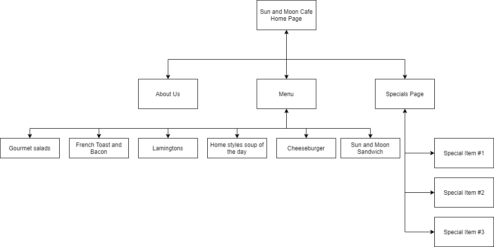

The Goal of this website is to improve growth of the company in an appreciable way. We are planning to hire sophisticated people who are having good management skills to provide perfect service. This site is to check our company details and also you can find the complete details products which are available in our company. The client will get very fresh products and also we are providing offers for certain items. Will showcase the pictures of the food items in the company site, the clients will get attracted to the delicious food items and the company will get good orders.
we are providing user friendly graphical user interface to the clients, this site can be used by each individual. Compare to other sites we have higher count of viewers since we are providing the complete details of the products which are listed in our company. Thu success ratio will be growth we are planned and succeeded with product tools to maintain client information and client can use live chat option in which they can ask the queries related to products in our website.
This site intended for who are around 18-40 age group people and also we can also mention that these audience are mostly local residence. We showcased our website with keen details along with their cost.

https://www.onaudience.com/resources/understanding-target-audience-definition-and-types/
https://www.forbes.com/sites/mikekappel/2017/03/08/6-ways-to-measure-small-business-success/?sh=622938da18f4
https://www.thebalancesmb.com/small-business-goals-4126116